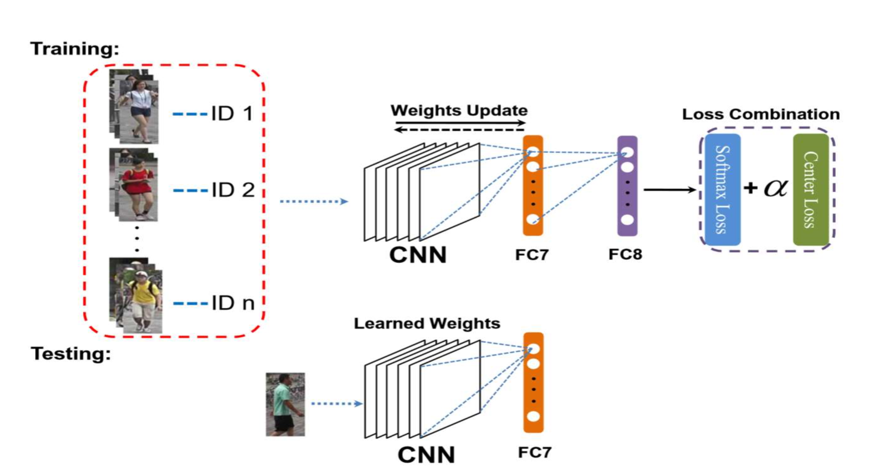
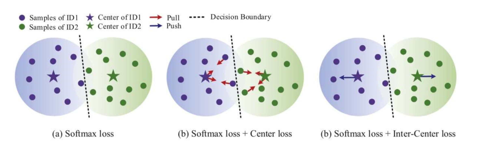
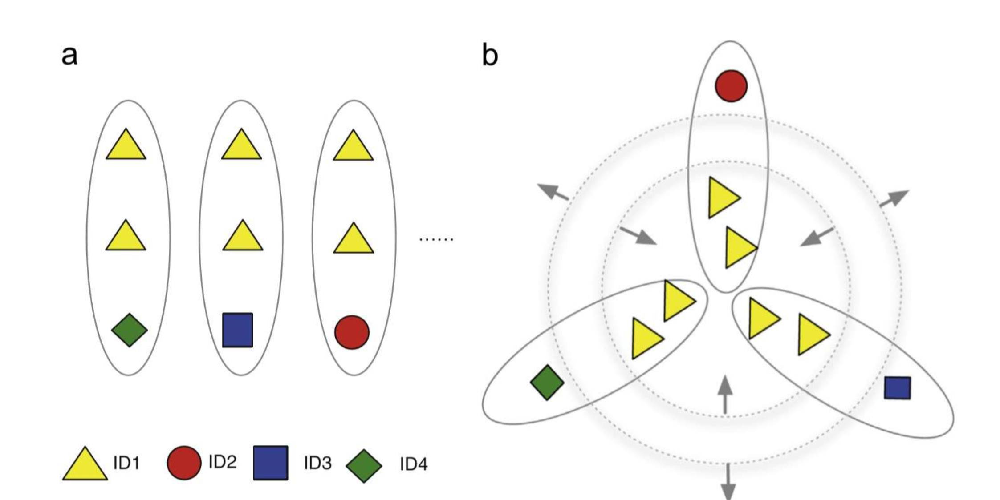
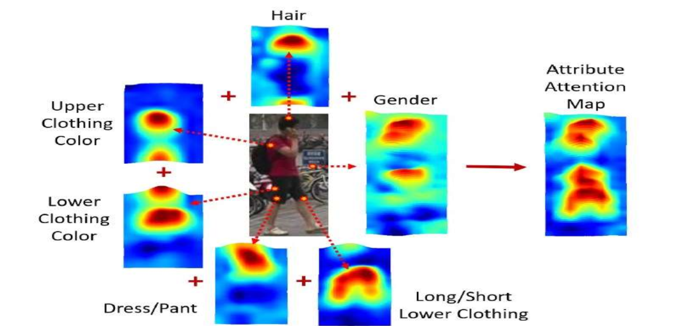
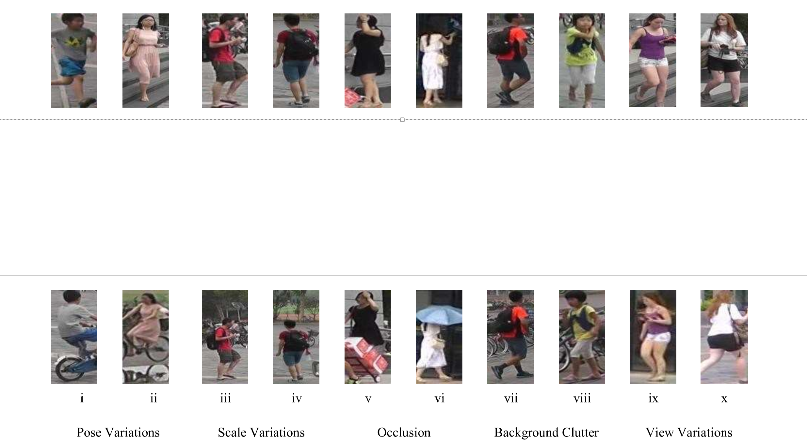

Summary of approaches used in person Re-Id task.(part 1)
Deep ReID Architecture Types
Classification Models
Classification models consider ReID as a multi-class classification problem. Those models use the softmax loss to predict the class of an input query. Softmax loss encourages the separation of different classes but struggles with large intra-class variations.
Several methods overcome the inability of softmax loss to handle intra-class variations by introducing new loss.
In “A loss combination based deep model for person re-identification”, Zhu et al. conjunct with center loss which was originally used for facial recognition. AUthors train a CNN with the proposed combination of softmax and center loss to extract discriminative features.
In “SphereRe-Id: Deep hypersphere manifold embedding for person re-identification”, Fan et al. use a multi-loss training setup having a combination of softmax loss, center loss and “inter-center loss”. While the softmax loss differentiates between different identity samples, the center loss pull the same class identities closer to their center and the inter-center loss push the center of different identity away from another.

Verification Models
Verification Models consider ReID to be a binary-classification problem. However, those models suffer from the class imbalance problem.
Triplet Based Re-Id Models
Triplet models for Re-Id take triplet input units. Each triplet unit contains three image samples: the anchor(have same identity as the anchor), a positive sample and a negative sample(different identity from the anchor). The triplet loss is trained to keep the Euclidean distance between anchor and positive sample less than anchor and negative sample.

Traditional triplet loss has convergence issus.
part-based Re-Id Models
Part-based Re-Id methods extract different image regions to find discriminative part-level features. Thoese models have better performence in handling small inter-class variations such as identifying different people wearing same color clothes due to their superior discrimination capability based on finer part-level cues which are usually suppressed while extracting global features.
In “Multi-level attention model for person re-identification”, Yan et al. propose a feature attention block for part-based Re-Id. The authors slice features maps into spatial features and assign them weight to highlight the important part regions.
Attention-Based Re-Id Models
Attention Modules focus on extracting regions containing highly discriminative features while ignoring other regions having little or no discriminative capability.

Re-Id challenges and solutions
The task of person re-identification has faced several challenges like sample variations in view, pose, lightning and scale, partial or complete occlusion, background clutter etc.

Several deep Re-Id contributions have aimed to develop robust methodoligies against these Re-Id challenges.
Skeleton joints data and clothe colors produce pose and lightning invariance, learning view-specific representations for view invariance, utilizing foreground attentive network to suppress noisy background, convolving with multi-scale input to obtain scale invariant features and using pose estimation to achieve pose invariance are some of efforts to overcome these challenges.